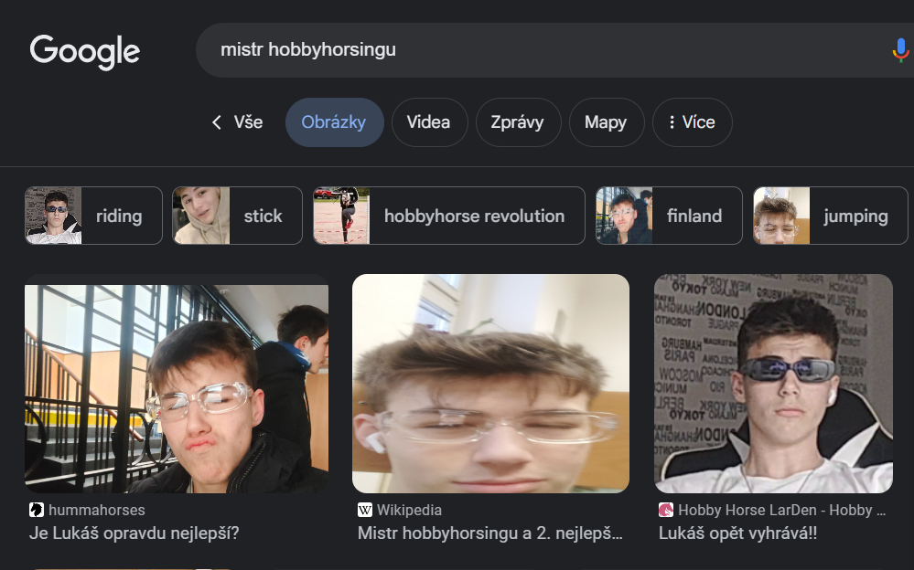
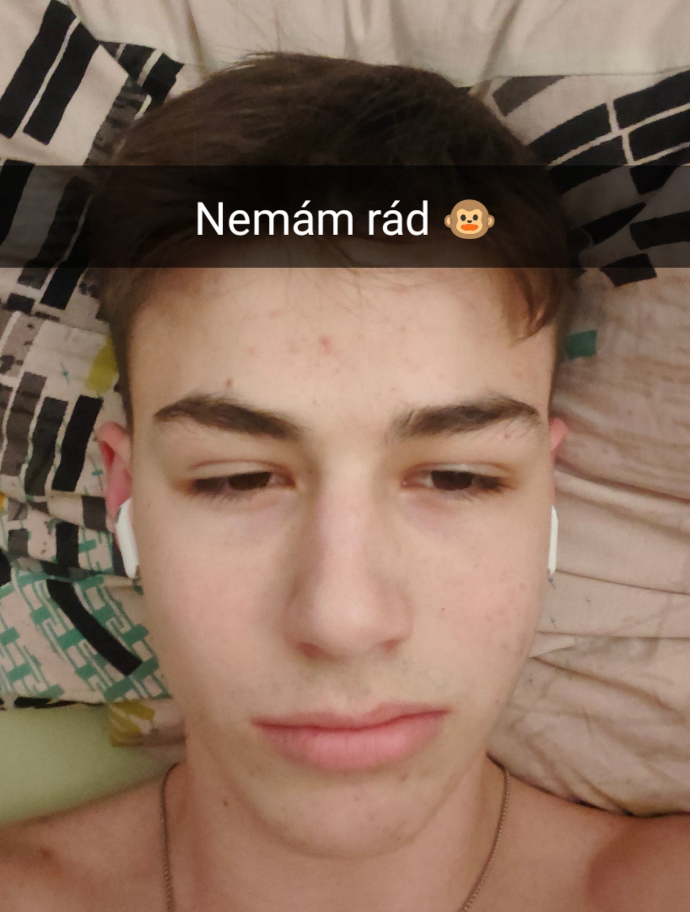

Lukáš (hitmaker) se taky posledni dobou věnuje své vášni tanci.
Učil se od nejlepších tanečníků jako například: Ryan Gosling, Michael Jackson a
Adam Kajumi
Nyní se snaží připojit k Doja Clanu aby mohl mít feat a mastering tracku od Egyho
(urcite se dostane)
Lukáš (bulhar) se také věnuje svému koníčku - hobbyhorsingu. Je to velmi náročný sport, který vyžaduje mnoho tréninku a odhodlání. Lukášovi se za svou kariéru podařilo získat titul mnohonásobného mistra ČR v hobbyhorsingu.
Lukáš (majitel legendárního Pražského golema) se také stává zkušeným webovým desingnérem a editorem a přemýšlí o založení vlastní firmy Macura Software Corp., která mimo jiné bude vytvářet i webové stránky na zakázku
Lukáš je známým milovníkem žen. Získal si už za svůj život srdce několika nevinných dívek. Jejich srdce si vždy získal neodolatelnou nabídkou dlouhé procházky po pláži, kde jim ukazoval své web designerské dovednosti.
